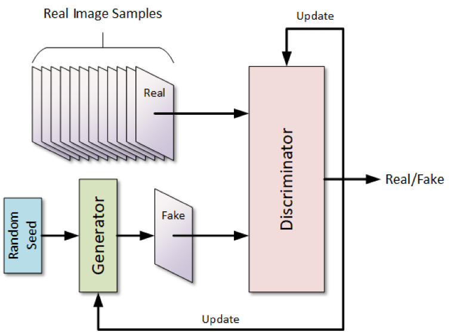
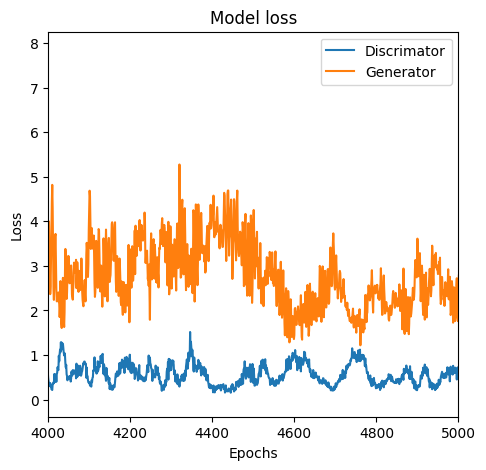

Generative Adversarial Networks
The amazing thing about GAN's is that you basically have a neural net that needs to fool another neural net to succeed, first you need to train a net for binary classification (discriminator), either the image is real or fake, straight forward, the magic comes with the generator.
At first the generator is just able to generate noise, the noisy image is presented to the discriminator, at this point the discriminator is totally able to detect the fake image, then thanks to backprop, the generator improves little by little, so he keeps trying again and again until he starts to generate things that look almost like numbers, at this point the discriminator is not so sure if the image is real or fake, and they fight continuously, sublime.
# import libraries
import numpy as np
import torch
import torch.nn as nn
import torch.nn.functional as F
# for importing data
import torchvision
import torchvision.transforms as T
from torch.utils.data import DataLoader,Subset
import sys
import copy
import matplotlib.pyplot as plt
from IPython import display
from matplotlib_inline.backend_inline import set_matplotlib_formats
device = torch.device('cuda' if torch.cuda.is_available() else 'cpu')
# import dataset (comes with colab!)
data = np.loadtxt(open('sample_data/mnist_train_small.csv','rb'),delimiter=',')
# don't need the labels here
data = data[:,1:]
# normalize the data to a range of [-1 1] (b/c tanh output)
dataNorm = data / np.max(data)
dataNorm = 2*dataNorm - 1
# convert to tensor
dataT = torch.tensor( dataNorm ).float()
# no dataloaders!
batchsize = 100
plt.imshow(dataT[8000].reshape(28,28), cmap="gray")
#this net receives a vector of 728 pixels and then with a binary output decides if it's a real image or a fake image, it ends with a sigmoid because the loss function is BCELoss
class discriminatorNet(nn.Module):
def __init__(self):
super().__init__()
#784
self.fc1 = nn.Linear(28*28,256)
self.fc2 = nn.Linear(256,256)
self.out = nn.Linear(256,1)
def forward(self,x):
x = F.leaky_relu( self.fc1(x) )
x = F.leaky_relu( self.fc2(x) )
x = self.out(x)
return torch.sigmoid( x )
dnet = discriminatorNet()
y = dnet(torch.randn(10,784))
y
#this net receives just noise but with each layer increases the size until the end where the output is 784, in this case representing the pixels for a 28x28 image
class generatorNet(nn.Module):
def __init__(self):
super().__init__()
self.fc1 = nn.Linear(64,256)
self.fc2 = nn.Linear(256,256)
self.out = nn.Linear(256,784)
def forward(self,x):
x = F.leaky_relu( self.fc1(x) )
x = F.leaky_relu( self.fc2(x) )
x = self.out(x)
return torch.tanh( x )
gnet = generatorNet()
y = gnet(torch.randn(10,64))
plt.imshow(y[9,:].detach().squeeze().view(28,28));
y.shape
#the 2 nets are created, the loss function is defined and the optimizers are also defined
# loss function (same for both phases of training)
lossfun = nn.BCELoss()
# create instances of the models
dnet = discriminatorNet().to(device)
gnet = generatorNet().to(device)
# optimizers (same algo but different variables b/c different parameters)
d_optimizer = torch.optim.Adam(dnet.parameters(), lr=.0003)
g_optimizer = torch.optim.Adam(gnet.parameters(), lr=.0003)
# this cell takes ~3 mins with 50k epochs
num_epochs = 50000
losses = np.zeros((num_epochs,2))
disDecs = np.zeros((num_epochs,2)) # disDecs = discriminator decisions
for epochi in range(num_epochs):
# create minibatches of REAL and FAKE images
randidx = torch.randint(dataT.shape[0],(batchsize,))
real_images = dataT[randidx,:].to(device)
fake_images = gnet( torch.randn(batchsize,64).to(device) ) # output of generator
# labels used for real and fake images
real_labels = torch.ones(batchsize,1).to(device)
fake_labels = torch.zeros(batchsize,1).to(device)
### ---------------- Train the discriminator ---------------- ###
# forward pass and loss for REAL pictures
pred_real = dnet(real_images) # REAL images into discriminator
d_loss_real = lossfun(pred_real,real_labels) # all labels are 1
# forward pass and loss for FAKE pictures
pred_fake = dnet(fake_images) # FAKE images into discriminator
d_loss_fake = lossfun(pred_fake,fake_labels) # all labels are 0
# collect loss (using combined losses)
d_loss = d_loss_real + d_loss_fake
losses[epochi,0] = d_loss.item()
disDecs[epochi,0] = torch.mean((pred_real>.5).float()).detach()
# backprop
d_optimizer.zero_grad()
d_loss.backward()
d_optimizer.step()
### ---------------- Train the generator ---------------- ###
# create fake images and compute loss
fake_images = gnet( torch.randn(batchsize,64).to(device) )
pred_fake = dnet(fake_images)
# compute and collect loss and accuracy
g_loss = lossfun(pred_fake,real_labels)
losses[epochi,1] = g_loss.item()
disDecs[epochi,1] = torch.mean((pred_fake>.5).float()).detach()
# backprop
g_optimizer.zero_grad()
g_loss.backward()
g_optimizer.step()
# print out a status message
if (epochi+1)%500==0:
msg = f'Finished epoch {epochi+1}/{num_epochs}'
sys.stdout.write('\r' + msg)
fig,ax = plt.subplots(1,3,figsize=(18,5))
ax[0].plot(losses)
ax[0].set_xlabel('Epochs')
ax[0].set_ylabel('Loss')
ax[0].set_title('Model loss')
ax[0].legend(['Discrimator','Generator'])
ax[0].set_xlim([4000,5000])
ax[1].plot(losses[::5,0],losses[::5,1],'k.',alpha=.1)
ax[1].set_xlabel('Discriminator loss')
ax[1].set_ylabel('Generator loss')
ax[2].plot(disDecs)
ax[2].set_xlabel('Epochs')
ax[2].set_ylabel('Probablity ("real")')
ax[2].set_title('Discriminator output')
ax[2].legend(['Real','Fake'])
plt.show()
These are the plots after training, but making zoom to the plot of the far left we see something interesting
After zooming in, we see what's happening between these 2, when the generator decreases his loss(so he is getting better at generating images), the discriminator increases his loss (so he is geting worse at distinguishing) and they go back and forth during all training
# generate the images from the generator network
gnet.eval()
fake_data = gnet(torch.randn(12,64).to(device)).cpu()
# and visualize...
fig,axs = plt.subplots(3,4,figsize=(8,6))
for i,ax in enumerate(axs.flatten()):
ax.imshow(fake_data[i,:,].detach().view(28,28),cmap='gray')
ax.axis('off')
plt.show()
After training, the images at the left were generated by the neural net, for referece, at the right is how the numbers from the dataset usually look like, so from completely random noise to numbers with 3min of training(using GPU)